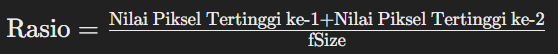
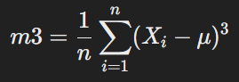
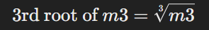

Link Aplikasi
Link Source Code
Studi Kasus MAGIC Gamma Telescope#
Tujuan Analisis#
Penelitian ini bertujuan untuk menganalisa registrasi partikel gamma berenergi tinggi di teleskop gamma dengan menggunakan teknik pentcitraan. Dalam penelitian ini terdapat beberapa fitur yang digunakan sebagai acuan untuk melakukan analisa diantaranya yaitu fLength, fWidth, fSize, fConc1, fAsym, fM3Long, fM3Trans, fAlpha, fDist, class. Class disini berfungsi sebagai class yang menunjukkan kejadian yang diamati dari gamma telescope.
Data Understanding#
Deskripsi Data#
Mengetahui partikel gamma melalui teleskop gamma#
Data tersebut dihasilkan MC (lihat di bawah) untuk mensimulasikan registrasi partikel gamma berenergi tinggi di teleskop gamma atmosfer Cherenkov berbasis darat menggunakan teknik pencitraan. Teleskop gamma Cherenkov mengamati sinar gamma berenergi tinggi, memanfaatkan radiasi yang dipancarkan oleh partikel bermuatan yang dihasilkan di dalam pancuran elektromagnetik yang dipicu oleh gamma, dan berkembang di atmosfer. Radiasi Cherenkov ini (panjang gelombang sinar UV) merembes melalui atmosfer dan terekam dalam detektor, sehingga memungkinkan rekonstruksi parameter pancuran. Informasi yang tersedia terdiri dari pulsa yang ditinggalkan oleh foton Cherenkov yang masuk pada tabung pengganda foto, yang disusun dalam sebuah bidang, kamera. Bergantung pada energi gamma primer, total beberapa ratus hingga 10.000 foton Cherenkov dikumpulkan, dalam pola (disebut gambar pancuran), yang memungkinkan untuk membedakan secara statistik foton yang disebabkan oleh gamma primer (sinyal) dari gambar hujan hadronik yang dimulai. oleh sinar kosmik di atmosfer bagian atas (latar belakang).
Biasanya, gambar pancuran setelah beberapa pra-pemrosesan berbentuk cluster memanjang. Sumbu panjangnya diorientasikan ke arah pusat kamera jika sumbu pancuran sejajar dengan sumbu optik teleskop, yaitu jika sumbu teleskop diarahkan ke suatu sumber titik. Analisis komponen utama dilakukan pada bidang kamera, yang menghasilkan sumbu korelasi dan menentukan elips. Jika deposisi didistribusikan sebagai Gaussian bivariat, ini akan menjadi elips kesetaraan. Parameter karakteristik elips ini (sering disebut parameter Hillas) merupakan salah satu parameter gambar yang dapat digunakan untuk diskriminasi. Deposisi energi biasanya asimetris sepanjang sumbu utama, dan asimetri ini juga dapat digunakan dalam diskriminasi. Selain itu, terdapat karakteristik pembeda lebih lanjut, seperti luas cluster pada bidang gambar, atau jumlah total deposisi.
Menampilkan Data#
pip install ucimlrepo
Collecting ucimlrepo
Downloading ucimlrepo-0.0.7-py3-none-any.whl (8.0 kB)
Requirement already satisfied: certifi>=2020.12.5 in c:\users\redmi\appdata\local\packages\pythonsoftwarefoundation.python.3.10_qbz5n2kfra8p0\localcache\local-packages\python310\site-packages (from ucimlrepo) (2024.6.2)
Requirement already satisfied: pandas>=1.0.0 in c:\users\redmi\appdata\local\packages\pythonsoftwarefoundation.python.3.10_qbz5n2kfra8p0\localcache\local-packages\python310\site-packages (from ucimlrepo) (1.5.3)
Requirement already satisfied: numpy>=1.21.0 in c:\users\redmi\appdata\local\packages\pythonsoftwarefoundation.python.3.10_qbz5n2kfra8p0\localcache\local-packages\python310\site-packages (from pandas>=1.0.0->ucimlrepo) (1.24.2)
Requirement already satisfied: python-dateutil>=2.8.1 in c:\users\redmi\appdata\local\packages\pythonsoftwarefoundation.python.3.10_qbz5n2kfra8p0\localcache\local-packages\python310\site-packages (from pandas>=1.0.0->ucimlrepo) (2.8.2)
Requirement already satisfied: pytz>=2020.1 in c:\users\redmi\appdata\local\packages\pythonsoftwarefoundation.python.3.10_qbz5n2kfra8p0\localcache\local-packages\python310\site-packages (from pandas>=1.0.0->ucimlrepo) (2023.3)
Requirement already satisfied: six>=1.5 in c:\users\redmi\appdata\local\packages\pythonsoftwarefoundation.python.3.10_qbz5n2kfra8p0\localcache\local-packages\python310\site-packages (from python-dateutil>=2.8.1->pandas>=1.0.0->ucimlrepo) (1.16.0)
Installing collected packages: ucimlrepo
Successfully installed ucimlrepo-0.0.7
Note: you may need to restart the kernel to use updated packages.
[notice] A new release of pip is available: 23.0.1 -> 24.1
[notice] To update, run: C:\Users\REDMI\AppData\Local\Microsoft\WindowsApps\PythonSoftwareFoundation.Python.3.10_qbz5n2kfra8p0\python.exe -m pip install --upgrade pip
from ucimlrepo import fetch_ucirepo
# fetch dataset
magic_gamma_telescope = fetch_ucirepo(id=159)
# data (as pandas dataframes)
X = magic_gamma_telescope.data.features
y = magic_gamma_telescope.data.targets
# metadata
print(magic_gamma_telescope.metadata)
# variable information
print(magic_gamma_telescope.variables)
{'uci_id': 159, 'name': 'MAGIC Gamma Telescope', 'repository_url': 'https://archive.ics.uci.edu/dataset/159/magic+gamma+telescope', 'data_url': 'https://archive.ics.uci.edu/static/public/159/data.csv', 'abstract': 'Data are MC generated to simulate registration of high energy gamma particles in an atmospheric Cherenkov telescope', 'area': 'Physics and Chemistry', 'tasks': ['Classification'], 'characteristics': ['Multivariate'], 'num_instances': 19020, 'num_features': 10, 'feature_types': ['Real'], 'demographics': [], 'target_col': ['class'], 'index_col': None, 'has_missing_values': 'no', 'missing_values_symbol': None, 'year_of_dataset_creation': 2004, 'last_updated': 'Tue Dec 19 2023', 'dataset_doi': '10.24432/C52C8B', 'creators': ['R. Bock'], 'intro_paper': None, 'additional_info': {'summary': "The data are MC generated (see below) to simulate registration of high energy gamma particles in a ground-based atmospheric Cherenkov gamma telescope using the imaging technique. Cherenkov gamma telescope observes high energy gamma rays, taking advantage of the radiation emitted by charged particles produced inside the electromagnetic showers initiated by the gammas, and developing in the atmosphere. This Cherenkov radiation (of visible to UV wavelengths) leaks through the atmosphere and gets recorded in the detector, allowing reconstruction of the shower parameters. The available information consists of pulses left by the incoming Cherenkov photons on the photomultiplier tubes, arranged in a plane, the camera. Depending on the energy of the primary gamma, a total of few hundreds to some 10000 Cherenkov photons get collected, in patterns (called the shower image), allowing to discriminate statistically those caused by primary gammas (signal) from the images of hadronic showers initiated by cosmic rays in the upper atmosphere (background).\r\n\r\nTypically, the image of a shower after some pre-processing is an elongated cluster. Its long axis is oriented towards the camera center if the shower axis is parallel to the telescope's optical axis, i.e. if the telescope axis is directed towards a point source. A principal component analysis is performed in the camera plane, which results in a correlation axis and defines an ellipse. If the depositions were distributed as a bivariate Gaussian, this would be an equidensity ellipse. The characteristic parameters of this ellipse (often called Hillas parameters) are among the image parameters that can be used for discrimination. The energy depositions are typically asymmetric along the major axis, and this asymmetry can also be used in discrimination. There are, in addition, further discriminating characteristics, like the extent of the cluster in the image plane, or the total sum of depositions.\r\n\r\nThe data set was generated by a Monte Carlo program, Corsika, described in:\r\n D. Heck et al., CORSIKA, A Monte Carlo code to simulate extensive air showers,\r\n Forschungszentrum Karlsruhe FZKA 6019 (1998).\r\nhttp://rexa.info/paper?id=ac6e674e9af20979b23d3ed4521f1570765e8d68\r\n\r\nThe program was run with parameters allowing to observe events with energies down to below 50 GeV.", 'purpose': None, 'funded_by': None, 'instances_represent': None, 'recommended_data_splits': None, 'sensitive_data': None, 'preprocessing_description': None, 'variable_info': ' 1. fLength: continuous # major axis of ellipse [mm]\r\n 2. fWidth: continuous # minor axis of ellipse [mm] \r\n 3. fSize: continuous # 10-log of sum of content of all pixels [in #phot]\r\n 4. fConc: continuous # ratio of sum of two highest pixels over fSize [ratio]\r\n 5. fConc1: continuous # ratio of highest pixel over fSize [ratio]\r\n 6. fAsym: continuous # distance from highest pixel to center, projected onto major axis [mm]\r\n 7. fM3Long: continuous # 3rd root of third moment along major axis [mm] \r\n 8. fM3Trans: continuous # 3rd root of third moment along minor axis [mm]\r\n 9. fAlpha: continuous # angle of major axis with vector to origin [deg]\r\n 10. fDist: continuous # distance from origin to center of ellipse [mm]\r\n 11. class: g,h # gamma (signal), hadron (background)\r\n\r\n g = gamma (signal): 12332\r\n h = hadron (background): 6688\r\n\r\n For technical reasons, the number of h events is underestimated. In the real data, the h class represents the majority of the events.\r\n\r\n The simple classification accuracy is not meaningful for this data, since classifying a background event as signal is worse than classifying a signal event as background. For comparison of different classifiers an ROC curve has to be used. The relevant points on this curve are those, where the probability of accepting a background event as signal is below one of the following thresholds: 0.01, 0.02, 0.05, 0.1, 0.2 depending on the required quality of the sample of the accepted events for different experiments.', 'citation': None}}
name role type demographic \
0 fLength Feature Continuous None
1 fWidth Feature Continuous None
2 fSize Feature Continuous None
3 fConc Feature Continuous None
4 fConc1 Feature Continuous None
5 fAsym Feature Continuous None
6 fM3Long Feature Continuous None
7 fM3Trans Feature Continuous None
8 fAlpha Feature Continuous None
9 fDist Feature Continuous None
10 class Target Binary None
description units missing_values
0 major axis of ellipse mm no
1 minor axis of ellipse mm no
2 10-log of sum of content of all pixels #phot no
3 ratio of sum of two highest pixels over fSize None no
4 ratio of highest pixel over fSize None no
5 distance from highest pixel to center, project... None no
6 3rd root of third moment along major axis mm no
7 3rd root of third moment along minor axis mm no
8 angle of major axis with vector to origin deg no
9 distance from origin to center of ellipse mm no
10 gamma (signal), hadron (background) None no
Penjelasan Code Code diatas digunakan untuk memuat data dari uci dataset dalam format python, hasil yang ditampilkan berupa fitur dan juga class yang terdapat dalam dataset tersebut, selain code diatas juga menampilkan hasil untuk type data dari masing masing fitur dan juga mengidentifikasi adanya missing value atau tidak dalam masing-masing fitur.
import pandas as pd
# mengambil data dari file csv
df_gamma = pd.read_csv('gamma_telescope.csv')
# menghapus kolom yang tidak di perlukan
df_gamma.drop("Unnamed: 0", axis=1, inplace=True)
df_gamma
---------------------------------------------------------------------------
FileNotFoundError Traceback (most recent call last)
Cell In[3], line 4
1 import pandas as pd
3 # mengambil data dari file csv
----> 4 df_gamma = pd.read_csv('gamma_telescope.csv')
6 # menghapus kolom yang tidak di perlukan
7 df_gamma.drop("Unnamed: 0", axis=1, inplace=True)
File ~\AppData\Local\Packages\PythonSoftwareFoundation.Python.3.10_qbz5n2kfra8p0\LocalCache\local-packages\Python310\site-packages\pandas\util\_decorators.py:211, in deprecate_kwarg.<locals>._deprecate_kwarg.<locals>.wrapper(*args, **kwargs)
209 else:
210 kwargs[new_arg_name] = new_arg_value
--> 211 return func(*args, **kwargs)
File ~\AppData\Local\Packages\PythonSoftwareFoundation.Python.3.10_qbz5n2kfra8p0\LocalCache\local-packages\Python310\site-packages\pandas\util\_decorators.py:331, in deprecate_nonkeyword_arguments.<locals>.decorate.<locals>.wrapper(*args, **kwargs)
325 if len(args) > num_allow_args:
326 warnings.warn(
327 msg.format(arguments=_format_argument_list(allow_args)),
328 FutureWarning,
329 stacklevel=find_stack_level(),
330 )
--> 331 return func(*args, **kwargs)
File ~\AppData\Local\Packages\PythonSoftwareFoundation.Python.3.10_qbz5n2kfra8p0\LocalCache\local-packages\Python310\site-packages\pandas\io\parsers\readers.py:950, in read_csv(filepath_or_buffer, sep, delimiter, header, names, index_col, usecols, squeeze, prefix, mangle_dupe_cols, dtype, engine, converters, true_values, false_values, skipinitialspace, skiprows, skipfooter, nrows, na_values, keep_default_na, na_filter, verbose, skip_blank_lines, parse_dates, infer_datetime_format, keep_date_col, date_parser, dayfirst, cache_dates, iterator, chunksize, compression, thousands, decimal, lineterminator, quotechar, quoting, doublequote, escapechar, comment, encoding, encoding_errors, dialect, error_bad_lines, warn_bad_lines, on_bad_lines, delim_whitespace, low_memory, memory_map, float_precision, storage_options)
935 kwds_defaults = _refine_defaults_read(
936 dialect,
937 delimiter,
(...)
946 defaults={"delimiter": ","},
947 )
948 kwds.update(kwds_defaults)
--> 950 return _read(filepath_or_buffer, kwds)
File ~\AppData\Local\Packages\PythonSoftwareFoundation.Python.3.10_qbz5n2kfra8p0\LocalCache\local-packages\Python310\site-packages\pandas\io\parsers\readers.py:605, in _read(filepath_or_buffer, kwds)
602 _validate_names(kwds.get("names", None))
604 # Create the parser.
--> 605 parser = TextFileReader(filepath_or_buffer, **kwds)
607 if chunksize or iterator:
608 return parser
File ~\AppData\Local\Packages\PythonSoftwareFoundation.Python.3.10_qbz5n2kfra8p0\LocalCache\local-packages\Python310\site-packages\pandas\io\parsers\readers.py:1442, in TextFileReader.__init__(self, f, engine, **kwds)
1439 self.options["has_index_names"] = kwds["has_index_names"]
1441 self.handles: IOHandles | None = None
-> 1442 self._engine = self._make_engine(f, self.engine)
File ~\AppData\Local\Packages\PythonSoftwareFoundation.Python.3.10_qbz5n2kfra8p0\LocalCache\local-packages\Python310\site-packages\pandas\io\parsers\readers.py:1735, in TextFileReader._make_engine(self, f, engine)
1733 if "b" not in mode:
1734 mode += "b"
-> 1735 self.handles = get_handle(
1736 f,
1737 mode,
1738 encoding=self.options.get("encoding", None),
1739 compression=self.options.get("compression", None),
1740 memory_map=self.options.get("memory_map", False),
1741 is_text=is_text,
1742 errors=self.options.get("encoding_errors", "strict"),
1743 storage_options=self.options.get("storage_options", None),
1744 )
1745 assert self.handles is not None
1746 f = self.handles.handle
File ~\AppData\Local\Packages\PythonSoftwareFoundation.Python.3.10_qbz5n2kfra8p0\LocalCache\local-packages\Python310\site-packages\pandas\io\common.py:856, in get_handle(path_or_buf, mode, encoding, compression, memory_map, is_text, errors, storage_options)
851 elif isinstance(handle, str):
852 # Check whether the filename is to be opened in binary mode.
853 # Binary mode does not support 'encoding' and 'newline'.
854 if ioargs.encoding and "b" not in ioargs.mode:
855 # Encoding
--> 856 handle = open(
857 handle,
858 ioargs.mode,
859 encoding=ioargs.encoding,
860 errors=errors,
861 newline="",
862 )
863 else:
864 # Binary mode
865 handle = open(handle, ioargs.mode)
FileNotFoundError: [Errno 2] No such file or directory: 'gamma_telescope.csv'
Penjelasan Code Setelah memiliki file csv dari dtaset yang akan digunakan maka file tersebut diupload setelah itu gunakan code diatas untuk membaca file dalam format csv tersebut. Karena di dalam dataset tersebut terdapat kolom yang tidak dibutuhkan untuk perhitungan analisa maka kolom tersebut dihapus dari dataset dengan menggunakan perintah drop.
Fitur#
df_gamma.info()
<class 'pandas.core.frame.DataFrame'>
RangeIndex: 19020 entries, 0 to 19019
Data columns (total 11 columns):
# Column Non-Null Count Dtype
--- ------ -------------- -----
0 fLength 19020 non-null float64
1 fWidth 19020 non-null float64
2 fSize 19020 non-null float64
3 fConc 19020 non-null float64
4 fConc1 19020 non-null float64
5 fAsym 19020 non-null float64
6 fM3Long 19020 non-null float64
7 fM3Trans 19020 non-null float64
8 fAlpha 19020 non-null float64
9 fDist 19020 non-null float64
10 class 19020 non-null object
dtypes: float64(10), object(1)
memory usage: 1.6+ MB
Penjelasan Code Code diatas digunakan untuk menunjukkan fitur beserta class yang ada dalam dataset maternal health risk dimana terdapat 5 fitur dengan 1 class. Selain menampilkan jumlah fitur dan class pada dataset, code tersebut juga menampilkan tipe data
Penjelasan Fitur#
Flength(major axis of ellipse) merupakan sumbu utama pada elips, fungsi dari sumbu utama ini yaitu untuk memahami distribusi spasial sinar gamma yang terdeteksi oleh teleskop. Sumbu utama ini mengacu pada diameter terpanjang elips yang menggambarkan area di mana sinar gamma terdeteksi. Dalam konteks analisis data teleskop gamma, sumbu utama ini penting untuk karakterisasi sumber sinar gamma dan pemahaman lebih lanjut mengenai fenomena yang diamati.
fWidth(minor axis of ellipse) merupakan sumbu kecil elips, Sumbu kecil elips adalah jarak terpendek dari pusat elips ke tepi elips. Fungsi dari sumbu kecil ini yaitu digunakan untuk membantu dalam memahami bentuk dan ukuran distribusi sinar gamma yang diterima. Sumbu kecil elips sering digunakan bersama dengan sumbu panjang untuk menggambarkan bentuk 2D dari distribusi cahaya.
fSize(10-log of sum of content of all pixels) Fungsi 10-logarithm dari jumlah konten semua piksel pada teleskop gamma biasanya digunakan untuk mengukur intensitas sinyal yang ditangkap oleh teleskop. Dalam konteks ini, “konten piksel” mengacu pada nilai yang diukur oleh masing-masing piksel detektor teleskop.
fConc(ratio of sum of two highest pixels over fSize) fitur ini mengacu pada total jumlah cahaya yang terkumpul oleh teleskop dari sebuah peristiwa. Ini bisa diartikan sebagai jumlah total piksel dalam citra yang dihasilkan oleh peristiwa tersebut. Fitur ini digunakan dalam analisis data teleskop gamma untuk membantu mengidentifikasi peristiwa gamma dari latar belakang kosmik atau noise. Dalam konteks teleskop Cherenkov, seperti yang digunakan untuk mendeteksi sinar gamma dari ruang angkasa, setiap peristiwa (event) menghasilkan jejak cahaya pada detektor. Beberapa fitur dari jejak ini dapat diekstraksi untuk membantu dalam klasifikasi peristiwa tersebut. Fitur ini dihitung menggunakan rumus seperti berikut :
fConc1(ratio of highest pixel over fSize) adalah rasio antara nilai tertinggi dari piksel dalam citra (highest pixel) dan ukuran fitur yang diamati (fSize). Fitur ini dapat memberikan informasi penting tentang distribusi energi dalam citra yang dihasilkan oleh teleskop gamma. Rasio ini dapat membantu dalam membedakan antara peristiwa gamma yang berbeda atau jenis partikel lainnya. Misalnya, peristiwa yang melibatkan foton gamma cenderung memiliki distribusi energi yang berbeda dibandingkan dengan partikel latar belakang (background noise). Fitur ini dapat membantu dalam memisahkan sinyal nyata dari kebisingan (noise). Peristiwa dengan rasio tinggi mungkin lebih mungkin mewakili sinyal nyata, sedangkan peristiwa dengan rasio rendah mungkin lebih cenderung mewakili noise atau kejadian acak. Dalam konteks pembelajaran mesin dan analisis data, fitur seperti “ratio of highest pixel over fSize” dapat digunakan sebagai salah satu dari banyak fitur dalam algoritma klasifikasi. Misalnya, dalam algoritma Gaussian Naive Bayes atau model ensemble lainnya, fitur ini dapat membantu meningkatkan akurasi prediksi dengan memberikan informasi tambahan tentang karakteristik peristiwa yang diamati oleh teleskop gamma.
fAsym(distance from highest pixel to center, projected onto major axis) merujuk pada ukuran geometris yang digunakan untuk menganalisis citra yang dihasilkan dari deteksi partikel atau sinar gamma. Metode klasifikasi dan pengenalan pola dapat menggunakan ukuran ini sebagai salah satu fitur untuk membedakan antara berbagai jenis sumber sinar gamma atau untuk mengenali tanda-tanda khusus dalam data. Distance from highest pixel to center, projected onto major axis adalah metrik penting dalam analisis data teleskop gamma. Ini membantu dalam mengkarakterisasi dan menganalisis citra yang dihasilkan dari deteksi sinar gamma, yang pada gilirannya mendukung pengenalan pola, klasifikasi peristiwa, dan pemahaman yang lebih baik tentang sumber-sumber astronomis yang dipelajari.
fM3Long(3rd root of third moment along major axis) adalah fitur statistik yang memberikan informasi tentang bentuk dan asimetri distribusi data yang sangat berguna dalam analisis dan klasifikasi data teleskop gamma. Fitur ini merujuk pada pengukuran statistik dari distribusi data yang terkait dengan bentuk atau distribusi cahaya yang diterima dari partikel gamma yang diobservasi. Pengukuran ini adalah salah satu fitur yang digunakan untuk menganalisis dan mengklasifikasikan partikel gamma. Momen ketiga dari distribusi data adalah ukuran dari asimetri distribusi tersebut. Ini memberikan informasi tentang seberapa simetris atau miring distribusi data tersebut terhadap titik tengahnya. Dalam klasifikasi data partikel (misalnya, memisahkan sinyal gamma dari latar belakang noise atau jenis partikel lainnya), fitur ini dapat memberikan informasi tambahan yang membantu algoritma pembelajaran mesin untuk membuat klasifikasi yang lebih akurat.
Dalam konteks bentuk objek (misalnya, jejak partikel gamma yang tertangkap oleh teleskop), sumbu utama (major axis) adalah garis terpanjang yang bisa digambar melalui objek, biasanya melewati pusat massa objek tersebut. Mengambil akar pangkat tiga (3rd root) dari momen ketiga dilakukan untuk menormalkan atau mengurangi skala nilai momen ketiga. Ini bisa membantu dalam membandingkan distribusi atau bentuk objek dengan ukuran yang berbeda.
fM3Trans(3rd root of third moment along minor axis) adalah untuk mengukur karakteristik spasial dari respons instrumentasi terhadap datangnya sinar gamma. Secara khusus, momen ketiga terhadap sumbu minor digunakan untuk menggambarkan distribusi spasial dari intensitas sumber sinar gamma. Penggunaan akar pangkat tiga dari third moment ini digunakan untuk Sensitivitas sudut, Resolusi Spasial, Optimalisasi Desain. fungsi dari 3rd root of third moment along minor axis pada teleskop gamma adalah sebagai parameter kunci untuk mengukur resolusi spasial dan sensitivitas sudut dari instrumentasi tersebut terhadap datangnya sinar gamma.
fAlpha(angle of major axis with vector to origin) pada teleskop gamma mengacu pada konsep orientasi sumbu utama dari respons instrumental terhadap sumber sinar gamma yang diamati. Fungsi utamanya adalah untuk menggambarkan arah relatif dari sumber sinar gamma terhadap teleskop tersebut. Dalam konteks teleskop gamma, ini membantu dalam menentukan sudut datang sinar gamma dari luar angkasa. Secara lebih teknis, angle of major axis ini dapat digunakan untuk mengkalibrasi atau menyesuaikan teleskop gamma untuk mengoptimalkan deteksi sumber sinar gamma yang spesifik. Informasi ini membantu dalam menentukan posisi dan karakteristik sumber sinar gamma, yang penting untuk studi astronomi dan fisika partikel tingkat tinggi. Jadi, angle of major axis with vector to origin pada teleskop gamma berperan penting dalam menentukan arah dan sifat sinar gamma yang diamati, yang kemudian digunakan untuk analisis lebih lanjut dalam ilmu astronomi dan fisika partikel.
fDist(distance from origin to center of ellipse) fitur ini berfungsi sebagai akurasi penunjukan, bidang pandang, dan kalibrasi instrumen. Secara keseluruhan, jarak dari titik awal ke pusat elips pada teleskop gamma berfungsi sebagai parameter dasar untuk akurasi penunjukan, menentukan bidang pandang, dan mengkalibrasi instrumen. Hal ini memungkinkan pengamatan yang tepat dan presisi terhadap sumber-sumber sinar gamma di luar angkasa.
Class#
df_gamma.value_counts('class')
class
g 12332
h 6688
Name: count, dtype: int64
Penjelasan Class#
Pada dataset ini terdapat dua jenis class yaitu g dan h, dimana g merupakan gamma (signal) dan h merupakan background. Dari code diatas ditampilkan juga jumlah dari masing-masing class. dan juga tipe data dari class tersebut yaitu integer
Identifikasi Kualitas Data#
Cek Missing Value#
df = df_gamma.isnull().sum()
df
fLength 0
fWidth 0
fSize 0
fConc 0
fConc1 0
fAsym 0
fM3Long 0
fM3Trans 0
fAlpha 0
fDist 0
class 0
dtype: int64
Penjelasan Code Dari code diatas digunakan untuk mengetahui atau mengecek apakah terdapat missing value di dalam dataset yang akan digunakan nanti. Berdasarkan dari hasil yang sudah di tampilkan diatas maka dapat kita lihat bahwa dari dataset tersebut tidak memiliki missing value dari masing-masing fiturnya.
Cek Local Outlier Factor (LOF)#
from sklearn.neighbors import LocalOutlierFactor
df_telescope = df_gamma
# df_telescope
# simpan class risklevel
telescope = df_telescope[['class']]
# #hapus kolom yang tidak diperlukan
df_telescope = df_telescope.drop(['class'], axis=1)
# df_telescope
# df_telescope.coloumns
# # Inisialisasi dan fit model LOF
lof = LocalOutlierFactor(n_neighbors=4, contamination=0.1) # Set parameter LOF
outlier_labels = lof.fit_predict(df_telescope)
# # Tambahkan label outlier dan class ke k cve dataframe
df_telescope['Outlier'] = outlier_labels
df_telescope['class'] = telescope
# df_cleaned = df_telescope[df_telescope['Outlier'] != -1]
# df_cleaned
df_telescope
# print(df_cleaned[['class','LOF_Score']])
| fLength | fWidth | fSize | fConc | fConc1 | fAsym | fM3Long | fM3Trans | fAlpha | fDist | Outlier | class | |
|---|---|---|---|---|---|---|---|---|---|---|---|---|
| 0 | 28.7967 | 16.0021 | 2.6449 | 0.3918 | 0.1982 | 27.7004 | 22.0110 | -8.2027 | 40.0920 | 81.8828 | 1 | g |
| 1 | 31.6036 | 11.7235 | 2.5185 | 0.5303 | 0.3773 | 26.2722 | 23.8238 | -9.9574 | 6.3609 | 205.2610 | 1 | g |
| 2 | 162.0520 | 136.0310 | 4.0612 | 0.0374 | 0.0187 | 116.7410 | -64.8580 | -45.2160 | 76.9600 | 256.7880 | 1 | g |
| 3 | 23.8172 | 9.5728 | 2.3385 | 0.6147 | 0.3922 | 27.2107 | -6.4633 | -7.1513 | 10.4490 | 116.7370 | 1 | g |
| 4 | 75.1362 | 30.9205 | 3.1611 | 0.3168 | 0.1832 | -5.5277 | 28.5525 | 21.8393 | 4.6480 | 356.4620 | 1 | g |
| ... | ... | ... | ... | ... | ... | ... | ... | ... | ... | ... | ... | ... |
| 19015 | 21.3846 | 10.9170 | 2.6161 | 0.5857 | 0.3934 | 15.2618 | 11.5245 | 2.8766 | 2.4229 | 106.8258 | 1 | h |
| 19016 | 28.9452 | 6.7020 | 2.2672 | 0.5351 | 0.2784 | 37.0816 | 13.1853 | -2.9632 | 86.7975 | 247.4560 | 1 | h |
| 19017 | 75.4455 | 47.5305 | 3.4483 | 0.1417 | 0.0549 | -9.3561 | 41.0562 | -9.4662 | 30.2987 | 256.5166 | -1 | h |
| 19018 | 120.5135 | 76.9018 | 3.9939 | 0.0944 | 0.0683 | 5.8043 | -93.5224 | -63.8389 | 84.6874 | 408.3166 | 1 | h |
| 19019 | 187.1814 | 53.0014 | 3.2093 | 0.2876 | 0.1539 | -167.3125 | -168.4558 | 31.4755 | 52.7310 | 272.3174 | 1 | h |
19020 rows × 12 columns
Penjelasan Code Code diatas digunakan untuk mendeteksi adanya outlier pada dataset. Outlier merupakan data yang memiliki value jauh berbeda daripada kumpulan data yang lainnya, adanya outlier ini bisa mengganggu proses perhitungan data karena bisa jadi adanya outlier ini disebabkan oleh kesalahan perhitungan data di awal. Cara untuk mengecek adanya outlier pada dataset yaitu baca terlebih dahulu file dataset, setelah itu simpan kolom class pada variabel yang berbeda setelah itu hapus kolom tersebut karena kolom class tidak diperlukan ketika mendeteksi outlier. Setelah itu inisialisasi model LOF seperti pada line 15, setelah itu lakukan pelatihan model LOF dimana jika titik bernilai -1 maka titik tersebut dianggap sebagai outlier. Setelah itu beri label dari setiap data dalam dataset tersebut dimana jika data tersebut merupakan outlier maka bernilai -1 dan jika bukan outlier akan bernilai 1. Setelah diproses maka akan menghasilkan data seperti diatas.
Pra-Processing Data#
Menampilkan Data yang Memiliki LOF#
df_telescope[df_telescope['Outlier'] == -1]
| fLength | fWidth | fSize | fConc | fConc1 | fAsym | fM3Long | fM3Trans | fAlpha | fDist | Outlier | class | |
|---|---|---|---|---|---|---|---|---|---|---|---|---|
| 8 | 96.2327 | 46.5165 | 4.1540 | 0.0779 | 0.0390 | 110.3550 | 85.0486 | 43.1844 | 4.8540 | 248.2260 | -1 | g |
| 10 | 62.7766 | 29.9104 | 3.3331 | 0.2475 | 0.1261 | -33.9065 | 57.5848 | 23.7710 | 9.9144 | 323.0940 | -1 | g |
| 14 | 60.4580 | 33.1061 | 3.1944 | 0.4679 | 0.2464 | 14.3000 | -33.8765 | 28.8315 | 8.2920 | 372.5680 | -1 | g |
| 20 | 91.6423 | 71.8818 | 3.8484 | 0.0780 | 0.0430 | -56.7107 | 72.3016 | 60.0190 | 16.6220 | 285.4140 | -1 | g |
| 35 | 84.6100 | 36.4657 | 3.6809 | 0.1393 | 0.0714 | 54.4505 | 86.0228 | 16.1472 | 17.5750 | 258.5970 | -1 | g |
| ... | ... | ... | ... | ... | ... | ... | ... | ... | ... | ... | ... | ... |
| 18989 | 114.9730 | 65.3205 | 3.8225 | 0.1418 | 0.0762 | -56.3756 | 70.2804 | -74.1230 | 37.2837 | 342.7150 | -1 | h |
| 19003 | 21.5189 | 15.4205 | 2.7328 | 0.5587 | 0.3117 | -7.3668 | 9.2409 | 17.1609 | 80.4307 | 223.9730 | -1 | h |
| 19004 | 23.4293 | 11.3673 | 2.7001 | 0.3842 | 0.1890 | -26.3784 | -14.5363 | 15.6128 | 88.3032 | 269.0718 | -1 | h |
| 19011 | 79.5528 | 44.9929 | 3.5488 | 0.1656 | 0.0900 | -39.6213 | 53.7866 | -30.0054 | 15.8075 | 311.5680 | -1 | h |
| 19017 | 75.4455 | 47.5305 | 3.4483 | 0.1417 | 0.0549 | -9.3561 | 41.0562 | -9.4662 | 30.2987 | 256.5166 | -1 | h |
1902 rows × 12 columns
Menghapus Data yang Terdeteksi Sebagai LOF#
df_cleaned = df_telescope[df_telescope['Outlier'] != -1]
df_cleaned
| fLength | fWidth | fSize | fConc | fConc1 | fAsym | fM3Long | fM3Trans | fAlpha | fDist | Outlier | class | |
|---|---|---|---|---|---|---|---|---|---|---|---|---|
| 0 | 28.7967 | 16.0021 | 2.6449 | 0.3918 | 0.1982 | 27.7004 | 22.0110 | -8.2027 | 40.0920 | 81.8828 | 1 | g |
| 1 | 31.6036 | 11.7235 | 2.5185 | 0.5303 | 0.3773 | 26.2722 | 23.8238 | -9.9574 | 6.3609 | 205.2610 | 1 | g |
| 2 | 162.0520 | 136.0310 | 4.0612 | 0.0374 | 0.0187 | 116.7410 | -64.8580 | -45.2160 | 76.9600 | 256.7880 | 1 | g |
| 3 | 23.8172 | 9.5728 | 2.3385 | 0.6147 | 0.3922 | 27.2107 | -6.4633 | -7.1513 | 10.4490 | 116.7370 | 1 | g |
| 4 | 75.1362 | 30.9205 | 3.1611 | 0.3168 | 0.1832 | -5.5277 | 28.5525 | 21.8393 | 4.6480 | 356.4620 | 1 | g |
| ... | ... | ... | ... | ... | ... | ... | ... | ... | ... | ... | ... | ... |
| 19014 | 43.2980 | 17.3545 | 2.8307 | 0.2877 | 0.1646 | -60.1842 | -33.8513 | -3.6545 | 78.4099 | 224.8299 | 1 | h |
| 19015 | 21.3846 | 10.9170 | 2.6161 | 0.5857 | 0.3934 | 15.2618 | 11.5245 | 2.8766 | 2.4229 | 106.8258 | 1 | h |
| 19016 | 28.9452 | 6.7020 | 2.2672 | 0.5351 | 0.2784 | 37.0816 | 13.1853 | -2.9632 | 86.7975 | 247.4560 | 1 | h |
| 19018 | 120.5135 | 76.9018 | 3.9939 | 0.0944 | 0.0683 | 5.8043 | -93.5224 | -63.8389 | 84.6874 | 408.3166 | 1 | h |
| 19019 | 187.1814 | 53.0014 | 3.2093 | 0.2876 | 0.1539 | -167.3125 | -168.4558 | 31.4755 | 52.7310 | 272.3174 | 1 | h |
17118 rows × 12 columns
Penjelasan Code Code diatas digunakan untuk menampilkan data yang bernilai -1 yang berarti diindikasikan sebagai data outlier
df_cleaned.value_counts('class')
class
g 11492
h 5626
Name: count, dtype: int64
Penjelasan Code Code ini digunakan untuk mengetahui jumlah data pada masing-masing class setelah penghapusan data yang diidentifikasi sebagai data outlier
Modelling#
K-Nearest Neighbour (K-NN)#
K-Nearest Neighbors (KNN) adalah model pembelajaran mesin terawasi yang dapat digunakan untuk tugas regresi dan klasifikasi. Algoritme ini bersifat non-parametrik, artinya tidak membuat asumsi apa pun tentang distribusi data yang mendasarinya. Algoritma KNN memprediksi label kumpulan data pengujian dengan melihat label tetangga terdekatnya di ruang fitur kumpulan data pelatihan. “K” adalah hyperparameter terpenting yang dapat disesuaikan untuk mengoptimalkan performa model. KNN adalah algoritma sederhana dan intuitif yang memberikan hasil yang baik untuk berbagai masalah klasifikasi. Mudah diterapkan dan dipahami, serta dapat diterapkan pada kumpulan data kecil dan besar. Namun, hal ini juga memiliki beberapa kekurangan, dan kelemahan utamanya adalah biaya komputasinya mahal untuk kumpulan data besar atau ruang fitur berdimensi tinggi. Algoritma KNN digunakan dalam mesin rekomendasi e-commerce, pengenalan gambar, deteksi penipuan, klasifikasi teks, deteksi anomali, dan masih banyak lagi. Dalam tutorial ini, kita akan menggunakan algoritma KNN untuk sistem persetujuan pinjaman
import pandas as pd
from sklearn.model_selection import train_test_split
from sklearn.neighbors import KNeighborsClassifier
from sklearn.metrics import accuracy_score
from sklearn.preprocessing import StandardScaler
# Mengakses dataset melalui csv
df = pd.read_csv('gamma_lof.csv')
# Menghapus kolom yang tidak relevan
# df.drop("Unnamed: 0", axis=1, inplace=True)
df.drop("Outlier", axis=1, inplace=True)
X = df[['fLength','fWidth','fSize','fConc','fConc1','fAsym','fM3Long','fM3Trans','fAlpha','fDist']]
y = df[ 'class']
X_train, X_test, Y_train, Y_test = train_test_split(X, y, test_size=0.2, random_state=42)
# X_test
Penjelasan code Code diatas digunakan untuk memisahkan dataset menjadi data train dan juga data test dimana data train merupakan data yang akan digunakan untuk perhitungan sedangkan data test merupakan data yang akan digunakan untuk uji coba hasil perhitungan. Hal yang perlu dilakukan yaitu memisahkan antara fitur dan juga class dan disimpan ke dalam variabel baru setelah itu bagi data menjadi dua dimana persentasi data training sebanyak 80% dan data testing sebanyak 20%.
# Standardisasi fitur
scaler = StandardScaler()
X_train = scaler.fit_transform(X_train)
X_test = scaler.transform(X_test)
# Membuat model KNN
knn = KNeighborsClassifier(n_neighbors=5)
# knn
# Melatih model pada training set
knn.fit(X_train, Y_train)
# Memprediksi target pada testing set
y_pred = knn.predict(X_test)
# Menghitung akurasi model
accuracy = accuracy_score(Y_test, y_pred)
print('Akurasi:', accuracy)
Akurasi: 0.8343848580441641
Penjelasan code Code diatas digunakan untuk menentukan tingkat akurasi data menggunakan metode KNN dimana setelah data dibagi menjadi data training dan juga data testing, langkah selanjutnya yaitu membuat model KNN dan melatih data train dengan model KNN, setelah itu melakukan prediksi menggunakan data testing setelah itu simpan hasil akurasi dari perhitungan tersebut.
# # Pastikan bahwa df1_train dan df1_test memiliki jumlah fitur yang sama
# assert X_train.shape[1] == X_test.shape[1], "Jumlah fitur pada X_train dan X_test tidak sama."
# Standardisasi fitur
scaler = StandardScaler()
X_train = scaler.fit_transform(X_train)
X_test = scaler.transform(X_test)
# Inisialisasi dan latih model KNN
knn = KNeighborsClassifier(n_neighbors=2)
knn.fit(X_train, Y_train)
# Data Baru yang Akan di Klasifikasikan
X_new = [[23.8172, 9.5728, 2.3385, 0.6147, 0.3922, 27.2107, -6.4633, -7.1513, 10.449, 116.737]] # Pastikan jumlah fitur sama
assert len(X_new[0]) == X_train.shape[1], "Jumlah fitur pada X_new tidak sesuai dengan X_train."
X_new = scaler.transform(X_new) # Jangan lupa untuk menstandarkan data baru
result = knn.predict(X_new)
print(f'Data X memiliki class: {result[0]}')
# Evaluasi Keakuratan
accuracy = knn.score(X_test, Y_test)
print(f'Nilai Keakuratan: {accuracy:.6f}')
print(f'Akurasi : {accuracy * 100:.2f}%')
Data X memiliki class: h
Nilai Keakuratan: 0.817560
Akurasi : 81.76%
Penjelasan code Code diatas digunakan untuk mengetahui class dari data yang sedang di prediksi. Hasil dari prediksi tersebut diakurasi dan dijadikan dalam bentuk persen.
Gaussian Naive Bayes Classification#
Membaca File dari csv#
import pandas as pd
file_path = 'gamma_telescope.csv'
dataframe = pd.read_csv(file_path)
print(dataframe.head())
Unnamed: 0 fLength fWidth fSize fConc fConc1 fAsym fM3Long \
0 0 28.7967 16.0021 2.6449 0.3918 0.1982 27.7004 22.0110
1 1 31.6036 11.7235 2.5185 0.5303 0.3773 26.2722 23.8238
2 2 162.0520 136.0310 4.0612 0.0374 0.0187 116.7410 -64.8580
3 3 23.8172 9.5728 2.3385 0.6147 0.3922 27.2107 -6.4633
4 4 75.1362 30.9205 3.1611 0.3168 0.1832 -5.5277 28.5525
fM3Trans fAlpha fDist class
0 -8.2027 40.0920 81.8828 g
1 -9.9574 6.3609 205.2610 g
2 -45.2160 76.9600 256.7880 g
3 -7.1513 10.4490 116.7370 g
4 21.8393 4.6480 356.4620 g
Membagi Data#
from sklearn.model_selection import train_test_split
# Mengakses dataset melalui csv
df = pd.read_csv('gamma_telescope.csv')
# Menghapus kolom yang tidak relevan
df.drop("Unnamed: 0", axis=1, inplace=True)
X = df[['fLength','fWidth','fSize','fConc','fConc1','fAsym','fM3Long','fM3Trans','fAlpha','fDist']]
y = df[ 'class']
X_train, X_test, Y_train, Y_test = train_test_split(X, y, test_size=0.2)
# X_test
Penjelasan Code Code diatas merupakan code untuk membagi data menjadi data training dan juga data testing untuk dilakukan perhitungan menggunakan metode gaussian naive bayes.
df1 = X_train
df2 = Y_train
df_train = pd.concat([df1,df2], axis=1, join='inner')
df_train
| fLength | fWidth | fSize | fConc | fConc1 | fAsym | fM3Long | fM3Trans | fAlpha | fDist | class | |
|---|---|---|---|---|---|---|---|---|---|---|---|
| 15173 | 33.0547 | 6.9405 | 2.5243 | 0.6211 | 0.3019 | 3.6617 | 7.3387 | -10.5551 | 23.1820 | 203.2107 | h |
| 7118 | 30.9994 | 13.5465 | 2.6004 | 0.3814 | 0.2171 | 39.5860 | 24.7028 | 12.0246 | 53.4530 | 71.1621 | g |
| 7720 | 76.6778 | 20.1766 | 2.8212 | 0.2838 | 0.1517 | -83.4907 | 54.4859 | 20.7574 | 1.2118 | 257.4080 | g |
| 16279 | 144.4120 | 34.4058 | 2.9643 | 0.4473 | 0.2253 | -96.1047 | -126.4620 | 31.4412 | 30.5008 | 388.3640 | h |
| 8585 | 22.4762 | 11.4257 | 2.3829 | 0.5797 | 0.3582 | -25.9621 | -10.0548 | -7.0058 | 16.3023 | 215.6510 | g |
| ... | ... | ... | ... | ... | ... | ... | ... | ... | ... | ... | ... |
| 9516 | 12.8213 | 11.5241 | 2.2368 | 0.7304 | 0.3739 | -15.1202 | 5.0553 | 11.6177 | 8.6385 | 75.5860 | g |
| 9957 | 33.8791 | 13.7651 | 2.7649 | 0.3127 | 0.1607 | 35.1460 | -24.8968 | -5.8808 | 1.0850 | 222.3460 | g |
| 14247 | 121.6529 | 46.6521 | 3.1932 | 0.2566 | 0.1206 | -32.6705 | -113.3768 | -37.3298 | 36.2947 | 354.8198 | h |
| 5330 | 12.5305 | 11.9242 | 2.0314 | 0.6884 | 0.3674 | 16.3801 | -10.1217 | -7.3178 | 49.8950 | 164.8320 | g |
| 2740 | 66.7957 | 22.9932 | 3.5853 | 0.1884 | 0.0968 | 79.6674 | 54.8701 | 19.9079 | 0.8060 | 238.4020 | g |
15216 rows × 11 columns
Penjelasan code Code tersebut digunakan untuk menampilkan data train
df3 = X_test
df4 = Y_test
df_test = pd.concat([df3,df4], axis=1, join='inner')
df_test
| fLength | fWidth | fSize | fConc | fConc1 | fAsym | fM3Long | fM3Trans | fAlpha | fDist | class | |
|---|---|---|---|---|---|---|---|---|---|---|---|
| 12377 | 107.1040 | 24.6377 | 2.9901 | 0.4153 | 0.2481 | -130.9560 | 65.9027 | -19.8345 | 27.4646 | 331.1580 | h |
| 286 | 36.2124 | 9.5335 | 2.3838 | 0.3884 | 0.1963 | -22.2515 | -24.4503 | -5.3397 | 27.4653 | 53.5635 | g |
| 14601 | 42.1323 | 20.3812 | 2.8338 | 0.3886 | 0.2295 | -15.8315 | -36.5094 | -16.6041 | 73.0550 | 233.3310 | h |
| 12555 | 21.3299 | 8.2421 | 2.4099 | 0.7276 | 0.4222 | 20.2004 | 18.8271 | -10.9809 | 71.5000 | 225.6170 | h |
| 3907 | 20.4263 | 7.1947 | 2.1833 | 0.7410 | 0.3705 | 3.3099 | -11.1449 | 5.6636 | 68.4478 | 247.9880 | g |
| ... | ... | ... | ... | ... | ... | ... | ... | ... | ... | ... | ... |
| 7253 | 26.4404 | 7.0226 | 2.2945 | 0.6244 | 0.3731 | -6.6369 | -17.9990 | -3.8175 | 18.4630 | 162.9160 | g |
| 5743 | 38.0261 | 14.9378 | 2.6875 | 0.4004 | 0.2310 | -35.8383 | 15.7637 | -12.4310 | 13.0541 | 146.5650 | g |
| 3803 | 23.7906 | 14.0915 | 2.4409 | 0.5036 | 0.3388 | 10.8068 | 18.5803 | 10.2987 | 0.1370 | 62.0580 | g |
| 14669 | 151.5580 | 58.0777 | 3.7252 | 0.1563 | 0.0839 | -203.5560 | -86.5503 | -50.3082 | 34.4576 | 334.0640 | h |
| 15855 | 182.4738 | 37.1706 | 2.9856 | 0.2622 | 0.1841 | -265.0052 | 172.5351 | 7.6725 | 14.3907 | 139.6862 | h |
3804 rows × 11 columns
Penjelasan code Code tersebut digunakan untuk menampilkan data testing
Gaussian Naive Bayes Library#
from sklearn.naive_bayes import GaussianNB
import pandas as pd
df = pd.read_csv('gamma_lof.csv')
# Menghapus kolom yang tidak relevan
# df.drop("Unnamed: 0", axis=1, inplace=True)
df.drop("Outlier", axis=1, inplace=True)
X = df[['fLength','fWidth','fSize','fConc','fConc1','fAsym','fM3Long','fM3Trans','fAlpha','fDist']]
y = df['class']
# Bagi data menjadi data latih dan data uji
X_train, X_test, Y_train, Y_test = train_test_split(X, y, test_size=0.2, random_state=25)
classifier = GaussianNB()
classifier.fit(X_train,Y_train)
# Data Baru yang Akan di Klasifikasikan
# X = [df_test.values.tolist()[1][:-1]]
X = [[23.8172, 9.5728, 2.3385, 0.6147, 0.3922, 27.2107, -6.4633, -7.1513, 10.449, 116.737]]
result = classifier.predict(X)
print(f'Data X memiliki class: {result}')
# Evaluasi Keakuratan
print("Nilai Keakuratan: %f" % classifier.score(df1, df2))
Data X memiliki class: ['g']
Nilai Keakuratan: 0.727984
/shared-libs/python3.9/py/lib/python3.9/site-packages/sklearn/base.py:450: UserWarning: X does not have valid feature names, but GaussianNB was fitted with feature names
warnings.warn(
Penjelasan Code Code diatas digunakan untuk menentukan nilai keakuratan data testing berdasarkan metode Gaussian Naive Bayes. Pada metode ini sama seperti metode KNN, fitur harus dibagi menjadi dua yaitu fitur dan class setelah itu bagi data menjadi data training dan juga data testing dimana data training sebanyak 80% dan data testing sebanyak 20%. Setelah itu masukkan data testing sebagai data yang akan diuji nilai keakuratannya.
Stacking Classifier#
Stacking adalah metode pembelajaran ensemble yang menggabungkan beberapa algoritma pembelajaran mesin melalui meta-learning. Di mana algoritma tingkat dasar dilatih berdasarkan kumpulan data pelatihan lengkap, meta-model dilatih pada hasil akhir dari semua basis model -tingkat sebagai fitur. Kami memiliki kesepakatan dengan metode knn dan naive bayes untuk menangani bias dan varians. Sekarang kita bisa belajar menumpuk yang meningkatkan akurasi prediksi model Anda.
from sklearn import model_selection
from sklearn.linear_model import LogisticRegression
from sklearn.neighbors import KNeighborsClassifier
from sklearn.naive_bayes import GaussianNB
from sklearn.ensemble import RandomForestClassifier
import numpy as np
import warnings
print(X_train)
fLength fWidth fSize fConc fConc1 fAsym fM3Long fM3Trans \
11663 65.2745 27.5888 3.2881 0.1736 0.0883 23.1461 48.7096 -6.1923
13436 121.3880 45.5298 3.5099 0.1017 0.0583 95.5971 120.8840 41.4752
6417 39.1910 14.4806 2.7067 0.2770 0.1444 -24.0162 22.5502 6.2250
15534 12.0034 2.0812 2.1780 0.7790 0.4113 -23.6215 -12.9491 -8.7515
9868 24.8732 10.6854 2.3971 0.5170 0.3307 13.7192 20.6316 -7.3335
... ... ... ... ... ... ... ... ...
7324 21.0982 12.5113 2.5099 0.4760 0.2458 18.1025 11.1148 8.0292
1160 27.3453 9.3991 2.4735 0.4840 0.2437 12.4780 18.7027 -3.8469
1175 33.8305 15.2366 2.8099 0.3145 0.1758 27.3322 -9.3742 -7.1819
2934 58.8381 21.5346 2.9574 0.2890 0.1462 -83.4035 41.5789 -9.3359
6618 13.1486 10.7687 2.1156 0.7739 0.4483 14.0483 -2.4687 -11.1593
fAlpha fDist
11663 0.3340 257.193
13436 52.5149 201.839
6417 2.5603 79.814
15534 34.4163 253.611
9868 1.7270 201.070
... ... ...
7324 35.9838 136.194
1160 6.7360 166.044
1175 12.0413 174.492
2934 2.1164 246.049
6618 70.3187 189.839
[15216 rows x 10 columns]
Penjelasan Code Code diatas digunakan untuk menampilkan data pada bagian data train yang berisi fitur dari dataset yang akan digunakan dan sudah dibagi pada proses sebelumnya.
print(Y_train)
11663 g
13436 h
6417 g
15534 h
9868 g
..
7324 g
1160 g
1175 g
2934 g
6618 g
Name: class, Length: 15216, dtype: object
Penjelasan Code Code diatas digunakan untuk menampilkan isi dari data training pada bagian Y_train yang berisi class dari dataset yang akan digunakan
Y_train = Y_train.map({'g': 1, 'h': 2})
print(Y_train)
11663 1
13436 2
6417 1
15534 2
9868 1
..
7324 1
1160 1
1175 1
2934 1
6618 1
Name: class, Length: 15216, dtype: int64
Penjelasan Code Code diatas digunakan untuk mengubah tipe data dari class pada data training bagian Y_train. Karena class pada dataset tersebut bertipe data categorical maka untuk menentukan akurasi harus di konversi ke dalam tipe data numerik. Disini untuk class g diubah menjadi 1, dan class h diubah menjadi 2 agar bisa dilakukan proses akurasi data nantinya.
print(X_test)
fLength fWidth fSize fConc fConc1 fAsym fM3Long \
7689 59.8603 21.2562 3.3684 0.1893 0.1060 63.6435 51.3070
15172 26.6349 25.9017 2.8122 0.4255 0.2007 14.0788 23.3311
122 70.6584 19.8319 3.1041 0.2541 0.1334 -96.9809 52.5046
16340 22.0438 9.4673 2.4552 0.5320 0.3318 7.9410 23.8117
9857 12.9624 10.9524 2.1538 0.7368 0.4667 -13.8539 6.6020
... ... ... ... ... ... ... ...
10274 23.5226 0.0029 2.0550 0.7137 0.3833 1.3219 -10.0212
3453 24.8562 10.9226 2.4306 0.5046 0.2690 -8.4249 -19.4875
17829 225.3240 89.7440 3.4151 0.1454 0.0767 -272.7740 -121.8420
1649 77.5988 38.4940 3.9316 0.1006 0.0505 83.1377 61.3527
10964 71.2506 26.7584 3.8233 0.1555 0.0785 -0.6803 57.9574
fM3Trans fAlpha fDist
7689 -10.7345 0.1363 194.2830
15172 12.7453 30.9235 185.8905
122 -12.6086 0.4500 288.2630
16340 -9.9239 82.2050 172.1424
9857 -5.0659 3.5444 168.6680
... ... ... ...
10274 0.0001 67.2339 197.2310
3453 -5.3051 22.9883 146.8130
17829 76.5754 77.4807 216.7740
1649 29.8495 4.7740 247.2850
10964 -13.2398 1.5906 244.6750
[3804 rows x 10 columns]
Penjelasan Code Code diatas digunakan untuk menampilkan data pada bagian data test yang berisi fitur dari dataset yang akan digunakan sebagai data testing ketika melakukan uji coba yang sudah dibagi pada proses sebelumnya.
print(Y_test)
7689 g
15172 h
122 g
16340 h
9857 g
..
10274 g
3453 g
17829 h
1649 g
10964 g
Name: class, Length: 3804, dtype: object
Penjelasan Code Code diatas digunakan untuk menampilkan isi dari data testing pada bagian Y_test yang berisi class dari dataset yang akan digunakan
Y_test = Y_test.map({'g': 1, 'h': 2})
print(Y_test)
7689 1
15172 2
122 1
16340 2
9857 1
..
10274 1
3453 1
17829 2
1649 1
10964 1
Name: class, Length: 3804, dtype: int64
Penjelasan Code Code diatas digunakan untuk mengubah tipe data dari class pada data training bagian Y_test. Karena class pada dataset tersebut bertipe data categorical maka untuk menentukan akurasi harus di konversi ke dalam tipe data numerik. Disini untuk class g diubah menjadi 1, dan class h diubah menjadi 2 agar bisa dilakukan proses akurasi data nantinya.
Model K-NN dengan n-neighbours = 3#
# Inisialisasi dan pelatihan model
c1 = KNeighborsClassifier(n_neighbors=3)
c1.fit(X_train, Y_train)
# Prediksi pada data pelatihan
p1 = c1.predict(X_train)
print(p1)
p1_test = c1.predict(X_test)
print (p1)
print (p1_test)
[1 2 1 ... 1 1 1]
[1 2 1 ... 1 1 1]
[1 1 1 ... 2 1 1]
Penjelasan code Setelah data dibagi menjadi dua yaitu data training dan juga data testing setelah itu data dilakukan uji coba dengan menggunakan metode KNN dengan menggunakan n-neighbout = 3. Uji coba ini dilakukan dengan menggunakan data training dan juga data testing
Model K-NN dengan n-neighbours = 5#
# Inisialisasi dan pelatihan model
c2 = KNeighborsClassifier(n_neighbors=5)
c2.fit(X_train, Y_train)
# Prediksi pada data pelatihan
p2 = c2.predict(X_train)
p2_test = c2.predict(X_test)
print (p2)
print (p2_test)
[1 2 1 ... 1 1 1]
[1 1 1 ... 2 1 1]
Penjelasan code Code ini juga berfungsi seperti code diatas yaitu melatih data training dengan menggunakan metode KNN dengan n-neighbour = 5
df_meta = pd.DataFrame({'p1': p1, 'p2': p2, 'Y train' : Y_train})
df_meta
| p1 | p2 | Y train | |
|---|---|---|---|
| 11663 | 1 | 1 | 1 |
| 13436 | 2 | 2 | 2 |
| 6417 | 1 | 1 | 1 |
| 15534 | 2 | 1 | 2 |
| 9868 | 1 | 1 | 1 |
| ... | ... | ... | ... |
| 7324 | 1 | 1 | 1 |
| 1160 | 1 | 1 | 1 |
| 1175 | 1 | 1 | 1 |
| 2934 | 1 | 1 | 1 |
| 6618 | 1 | 1 | 1 |
15216 rows × 3 columns
Penjelasan code Setelah melakukan pelatihan pada kedua data tersebut dengan menggunakan metode KNN selanjutnya yaitu menggabungkan data tersebut ke dalam sebuah database
Meta Classifier menggunakan Gaussian Naive Bayes#
# Menggabungkan prediksi dari kedua model KNN sebagai fitur baru
f_meta = np.column_stack((p1, p2))
X_test = np.column_stack((p1_test, p2_test))
# Inisialisasi dan pelatihan meta-classifier Naive Bayes
meta_classifier = GaussianNB()
meta_classifier.fit(f_meta, Y_train)
predict = meta_classifier.predict(X_test)
accuracy = accuracy_score(predict, Y_test)
print(f'Akurasi : {accuracy * 100:.2f}%')
Akurasi : 80.18%
Penjelasan code Code ini merupakan pelatihan dengan menggunakan model meta classifier dari data hasil prediksi dua model KNN sebelumnya yang berfungsi sebagai fitur baru dengan menggunakan metode naive bayes
Memprediksi menggunakan data baru#
from sklearn.naive_bayes import GaussianNB
from sklearn.metrics import accuracy_score
import numpy as np
import pandas as pd
# Menggabungkan prediksi dari kedua model KNN sebagai fitur baru
f_meta_train = np.column_stack((p1, p2))
f_meta_test = np.column_stack((p1_test, p2_test))
# Data baru untuk prediksi
X_new = [[23.8172, 9.5728, 2.3385, 0.6147, 0.3922, 27.2107, -6.4633, -7.1513, 10.449, 116.737]]
# Inisialisasi dan pelatihan meta-classifier Naive Bayes
meta_classifier = GaussianNB()
meta_classifier.fit(f_meta_train, Y_train)
# Prediksi menggunakan meta-classifier
predict = meta_classifier.predict(f_meta_test)
# Menghitung akurasi prediksi
accuracy = accuracy_score(Y_test, predict)
print(f'Akurasi : {accuracy * 100:.2f}%')
# Prediksi data baru menggunakan model KNN
p1_new = c1.predict(X_new)
p2_new = c2.predict(X_new)
# Menggabungkan prediksi KNN sebagai fitur baru untuk data baru
f_meta_new = np.column_stack((p1_new, p2_new))
# Prediksi data baru menggunakan meta-classifier Naive Bayes
predict_new = meta_classifier.predict(f_meta_new)
print(f'Prediksi untuk data baru : {predict_new}')
Akurasi : 80.18%
Prediksi untuk data baru : [1]
/shared-libs/python3.9/py/lib/python3.9/site-packages/sklearn/base.py:450: UserWarning: X does not have valid feature names, but KNeighborsClassifier was fitted with feature names
warnings.warn(
/shared-libs/python3.9/py/lib/python3.9/site-packages/sklearn/base.py:450: UserWarning: X does not have valid feature names, but KNeighborsClassifier was fitted with feature names
warnings.warn(
Penjelasan code Code ini digunakan untuk memprediksi data baru dengan berdasarkan nilai dari metode meta classifier menggunakan KNN dan menentukan nilai akurasi dari perhitungan tersebut.
import pandas as pd
import numpy as np
df = pd.read_csv('gamma_telescope.csv')
df.drop("Unnamed: 0", axis=1, inplace=True)
# df.drop("Outlier", axis=1, inplace=True)
df
| fLength | fWidth | fSize | fConc | fConc1 | fAsym | fM3Long | fM3Trans | fAlpha | fDist | class | |
|---|---|---|---|---|---|---|---|---|---|---|---|
| 0 | 28.7967 | 16.0021 | 2.6449 | 0.3918 | 0.1982 | 27.7004 | 22.0110 | -8.2027 | 40.0920 | 81.8828 | g |
| 1 | 31.6036 | 11.7235 | 2.5185 | 0.5303 | 0.3773 | 26.2722 | 23.8238 | -9.9574 | 6.3609 | 205.2610 | g |
| 2 | 162.0520 | 136.0310 | 4.0612 | 0.0374 | 0.0187 | 116.7410 | -64.8580 | -45.2160 | 76.9600 | 256.7880 | g |
| 3 | 23.8172 | 9.5728 | 2.3385 | 0.6147 | 0.3922 | 27.2107 | -6.4633 | -7.1513 | 10.4490 | 116.7370 | g |
| 4 | 75.1362 | 30.9205 | 3.1611 | 0.3168 | 0.1832 | -5.5277 | 28.5525 | 21.8393 | 4.6480 | 356.4620 | g |
| ... | ... | ... | ... | ... | ... | ... | ... | ... | ... | ... | ... |
| 19015 | 21.3846 | 10.9170 | 2.6161 | 0.5857 | 0.3934 | 15.2618 | 11.5245 | 2.8766 | 2.4229 | 106.8258 | h |
| 19016 | 28.9452 | 6.7020 | 2.2672 | 0.5351 | 0.2784 | 37.0816 | 13.1853 | -2.9632 | 86.7975 | 247.4560 | h |
| 19017 | 75.4455 | 47.5305 | 3.4483 | 0.1417 | 0.0549 | -9.3561 | 41.0562 | -9.4662 | 30.2987 | 256.5166 | h |
| 19018 | 120.5135 | 76.9018 | 3.9939 | 0.0944 | 0.0683 | 5.8043 | -93.5224 | -63.8389 | 84.6874 | 408.3166 | h |
| 19019 | 187.1814 | 53.0014 | 3.2093 | 0.2876 | 0.1539 | -167.3125 | -168.4558 | 31.4755 | 52.7310 | 272.3174 | h |
19020 rows × 11 columns
Bagging Classifier#
Bagging (Bootstrap Aggregating) Classifier adalah salah satu metode ensemble learning yang digunakan dalam machine learning untuk meningkatkan kinerja dan stabililitas model prediktif. Ensemble learning adalah teknik yang menggabungkan beberapa model pembelajaran mesin untuk meningkatkan keakuratan prediksi secara keseluruhan.
import pandas as pd
import numpy as np
from sklearn.naive_bayes import GaussianNB
from sklearn.model_selection import train_test_split
from sklearn.metrics import accuracy_score
# Memuat dataset
df = pd.read_csv('gamma_telescope.csv')
# Menghapus kolom yang tidak relevan jika ada
if 'Unnamed: 0' in df.columns:
df.drop("Unnamed: 0", axis=1, inplace=True)
if 'Outlier' in df.columns:
df.drop("Outlier", axis=1, inplace=True)
# Periksa nilai unik dalam kolom 'class'
print("Nilai unik dalam kolom 'class':", df['class'].unique())
# Konversi nilai-nilai string menjadi angka
df['class'] = df['class'].map({'g': 1, 'h': 2})
# Pastikan bahwa semua nilai dalam kolom 'class' adalah angka
print("Nilai unik setelah konversi:", df['class'].unique())
# Memisahkan fitur dan target
X = df[['fLength','fWidth','fSize','fConc','fConc1','fAsym','fM3Long','fM3Trans','fAlpha','fDist']]
y = df['class']
# Membagi dataset menjadi data pelatihan dan pengujian
X_train, X_test, y_train, y_test = train_test_split(X, y, test_size=0.2, random_state=25)
# Parameter bagging
n_estimators = 20
n_samples = int(len(X_train) / n_estimators)
# Inisialisasi list untuk menyimpan model dan akurasi
estimators = []
accuracies = []
pred = []
X_new = [[23.8172, 9.5728, 2.3385, 0.6147, 0.3922, 27.2107, -6.4633, -7.1513, 10.449, 116.737]]
np.random.seed(0)
# Membuat model Gaussian Naive Bayes untuk setiap subset
for i in range(n_estimators):
# Membuat bootstrap sample
bootstrap_indices = np.random.randint(0, len(X_train), n_samples)
X_train_bootstrap = X_train.iloc[bootstrap_indices]
y_train_bootstrap = y_train.iloc[bootstrap_indices]
# Melatih model
gnb_model = GaussianNB()
gnb_model.fit(X_train_bootstrap, y_train_bootstrap)
estimators.append(gnb_model)
# Evaluasi model
bebas = gnb_model.predict(X_new)
pred.append(bebas[0]) # Mengambil nilai prediksi dan menyimpannya di list pred
print(f"Prediction for estimator {i + 1}: {bebas[0]}")
y_pred = gnb_model.predict(X_test)
accuracy = accuracy_score(y_test, y_pred)
accuracies.append(accuracy)
print(f"Estimator {i + 1} accuracy: {accuracy:.4f}")
# Majority vote untuk prediksi data baru
pred_majority_vote = np.bincount(pred).argmax()
print(f"Majority vote prediction for new data: {pred_majority_vote}")
# Menghitung jumlah dari masing-masing kelas dalam pred
class_counts = np.bincount(pred)
for class_label in range(len(class_counts)):
print(f"Jumlah prediksi kelas {class_label}: {class_counts[class_label]}")
# Menghitung rata-rata akurasi dari semua estimators
average_accuracy = np.mean(accuracies)
print(f"Average accuracy of all estimators: {average_accuracy:.4f}")
Nilai unik dalam kolom 'class': ['g' 'h']
Nilai unik setelah konversi: [1 2]
Prediction for estimator 1: 1
Estimator 1 accuracy: 0.7161
Prediction for estimator 2: 1
Estimator 2 accuracy: 0.7269
Prediction for estimator 3: 1
Estimator 3 accuracy: 0.7035
Prediction for estimator 4: 1
Estimator 4 accuracy: 0.7161
Prediction for estimator 5: 1
Estimator 5 accuracy: 0.7295
Prediction for estimator 6: 1
Estimator 6 accuracy: 0.7198
Prediction for estimator 7: 1
Estimator 7 accuracy: 0.7148
Prediction for estimator 8: 1
Estimator 8 accuracy: 0.7098
Prediction for estimator 9: 1
Estimator 9 accuracy: 0.7269
Prediction for estimator 10: 1
Estimator 10 accuracy: 0.7106
Prediction for estimator 11: 1
Estimator 11 accuracy: 0.7305
Prediction for estimator 12: 1
Estimator 12 accuracy: 0.7192
Prediction for estimator 13: 1
Estimator 13 accuracy: 0.7129
Prediction for estimator 14: 1
Estimator 14 accuracy: 0.7142
Prediction for estimator 15: 1
Estimator 15 accuracy: 0.7203
Prediction for estimator 16: 1
Estimator 16 accuracy: 0.7103
Prediction for estimator 17: 1
Estimator 17 accuracy: 0.7072
Prediction for estimator 18: 1
Estimator 18 accuracy: 0.7132
Prediction for estimator 19: 1
Estimator 19 accuracy: 0.7119
Prediction for estimator 20: 1
Estimator 20 accuracy: 0.7295
Majority vote prediction for new data: 1
Jumlah prediksi kelas 0: 0
Jumlah prediksi kelas 1: 20
Average accuracy of all estimators: 0.7172
/shared-libs/python3.9/py/lib/python3.9/site-packages/sklearn/base.py:450: UserWarning: X does not have valid feature names, but GaussianNB was fitted with feature names
warnings.warn(
/shared-libs/python3.9/py/lib/python3.9/site-packages/sklearn/base.py:450: UserWarning: X does not have valid feature names, but GaussianNB was fitted with feature names
warnings.warn(
/shared-libs/python3.9/py/lib/python3.9/site-packages/sklearn/base.py:450: UserWarning: X does not have valid feature names, but GaussianNB was fitted with feature names
warnings.warn(
/shared-libs/python3.9/py/lib/python3.9/site-packages/sklearn/base.py:450: UserWarning: X does not have valid feature names, but GaussianNB was fitted with feature names
warnings.warn(
/shared-libs/python3.9/py/lib/python3.9/site-packages/sklearn/base.py:450: UserWarning: X does not have valid feature names, but GaussianNB was fitted with feature names
warnings.warn(
/shared-libs/python3.9/py/lib/python3.9/site-packages/sklearn/base.py:450: UserWarning: X does not have valid feature names, but GaussianNB was fitted with feature names
warnings.warn(
/shared-libs/python3.9/py/lib/python3.9/site-packages/sklearn/base.py:450: UserWarning: X does not have valid feature names, but GaussianNB was fitted with feature names
warnings.warn(
/shared-libs/python3.9/py/lib/python3.9/site-packages/sklearn/base.py:450: UserWarning: X does not have valid feature names, but GaussianNB was fitted with feature names
warnings.warn(
/shared-libs/python3.9/py/lib/python3.9/site-packages/sklearn/base.py:450: UserWarning: X does not have valid feature names, but GaussianNB was fitted with feature names
warnings.warn(
/shared-libs/python3.9/py/lib/python3.9/site-packages/sklearn/base.py:450: UserWarning: X does not have valid feature names, but GaussianNB was fitted with feature names
warnings.warn(
/shared-libs/python3.9/py/lib/python3.9/site-packages/sklearn/base.py:450: UserWarning: X does not have valid feature names, but GaussianNB was fitted with feature names
warnings.warn(
/shared-libs/python3.9/py/lib/python3.9/site-packages/sklearn/base.py:450: UserWarning: X does not have valid feature names, but GaussianNB was fitted with feature names
warnings.warn(
/shared-libs/python3.9/py/lib/python3.9/site-packages/sklearn/base.py:450: UserWarning: X does not have valid feature names, but GaussianNB was fitted with feature names
warnings.warn(
/shared-libs/python3.9/py/lib/python3.9/site-packages/sklearn/base.py:450: UserWarning: X does not have valid feature names, but GaussianNB was fitted with feature names
warnings.warn(
/shared-libs/python3.9/py/lib/python3.9/site-packages/sklearn/base.py:450: UserWarning: X does not have valid feature names, but GaussianNB was fitted with feature names
warnings.warn(
/shared-libs/python3.9/py/lib/python3.9/site-packages/sklearn/base.py:450: UserWarning: X does not have valid feature names, but GaussianNB was fitted with feature names
warnings.warn(
/shared-libs/python3.9/py/lib/python3.9/site-packages/sklearn/base.py:450: UserWarning: X does not have valid feature names, but GaussianNB was fitted with feature names
warnings.warn(
/shared-libs/python3.9/py/lib/python3.9/site-packages/sklearn/base.py:450: UserWarning: X does not have valid feature names, but GaussianNB was fitted with feature names
warnings.warn(
/shared-libs/python3.9/py/lib/python3.9/site-packages/sklearn/base.py:450: UserWarning: X does not have valid feature names, but GaussianNB was fitted with feature names
warnings.warn(
/shared-libs/python3.9/py/lib/python3.9/site-packages/sklearn/base.py:450: UserWarning: X does not have valid feature names, but GaussianNB was fitted with feature names
warnings.warn(
Penjelasan code Bagging (Bootstrap Aggregating) adalah metode ensemble yang meningkatkan akurasi prediksi dengan menggabungkan hasil dari beberapa model yang dilatih pada subset acak dari data asli. Bagging mengurangi overfitting dan meningkatkan kestabilan model. Pada studi kasus ini, saya menggunakan data yang sudah dilatih dengan metode KNN dan digunakan sebagai fitur baru dalam perhitungan menggunakan bagging classifier
![Created in deepnote.com]() Created in Deepnote
Created in Deepnote